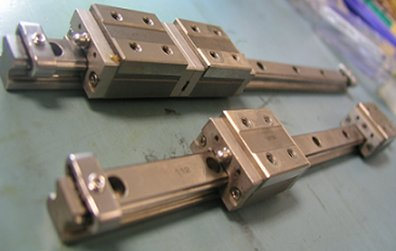

Service History
Subject: Error T-4241The detected speed at low power state is too fast
Handler Model: NS-7080W (StatsChippac) S/N: 121256/121281/121282
MFG Date: 07.11/08.02/08.02
Controller: RC520 (MMI H7.11-SSY)
Date: 24 Apr 2008
Symptom
During production, SRC520 error occurred and T-4241 “The detected speed at low power state is too fast” error message appeared.
1) In the course of accessing the problem, we found out that Z or U axis of Index Arm got stuck when brake release switch (S1) or (S2) was depressed.
2) Further investigation found that there was no grease on the Linear Guides.
3) After removing the linear guides, rust was noticed on the linear guides and minor chips noted along the linear guides. Refer to illustrations below (1a-1c).
4) A detailed check was initiated on the last 13 handlers which SCS had purchased recently. We found out that most of the Index Arm linear guides' grease had already dried up.
|
 Linear guides |
S/N: 121282 |
S/N: 121256 |
Action
1) Handlers S/N: 121256/121282/121281 Index Arm linear guides had been changed. (Note: Spare received from KG also did not have grease on the linear guides)
2) All 13 handlers had been greased on the Index Arm Z/Y/U axis and manually moved the Index Arms according to the Maintenance Manual. Handlers S/N: 121218 (MFG:07.08)/121230 (MFG:07.09)/121231 (MFG:07.09)/121245 (MFG:07.11)/121246 (MFG:07.11)/121256 (MFG:07.11)/ 121257 (MFG:07.11)/121281 (MFG: 08.02)/121282 (MFG:08.02)/121283 (MFG:08.02)/121284 (MFG:08.02)/121289 (MFG:08.03)/121290 (MFG:08.03)
Cause
Grease dried up at Index Arm Z & U caused T-4241 “The detected speed at low power state is too fast” error .